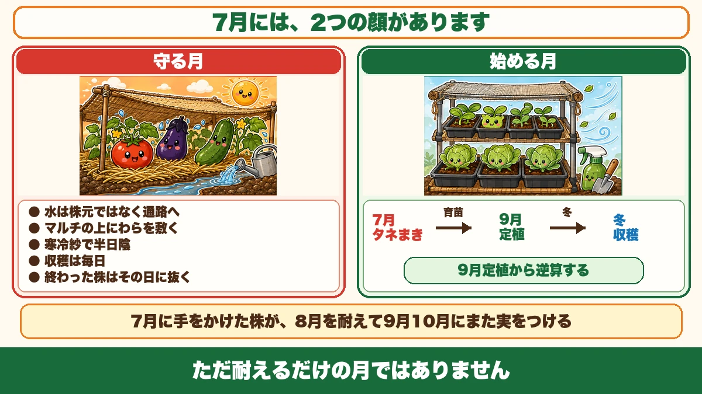
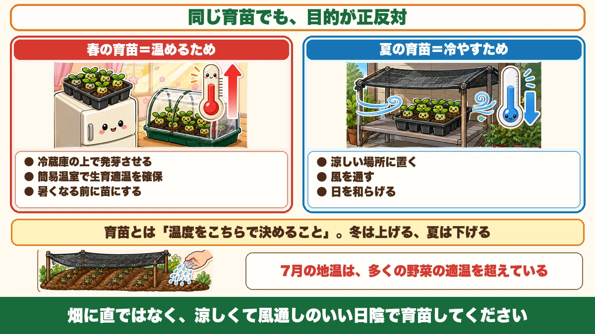
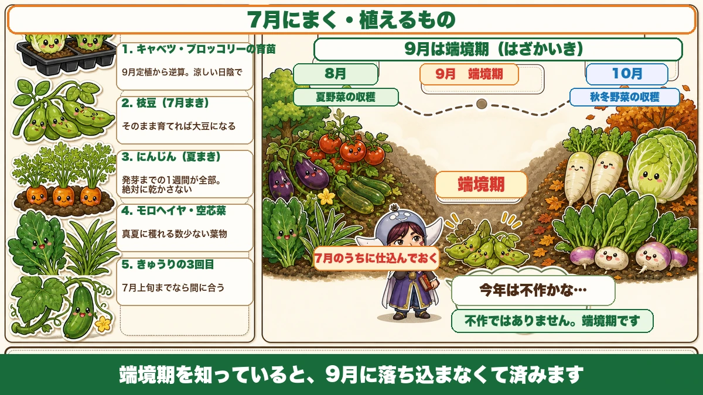

【7月にまく・植える野菜】春は温めるため、夏は冷やすために育苗します🌻

🗨️「7月は暑いだけで、やることがない」
🗨️「秋冬野菜は、涼しくなってから始めればいい」
🗨️「9月って、なんだか収穫が少ない気がする」
どうも、8150（えいこう）です🌱 家庭菜園歴8年、理科の教員免許を持っていて、有機・無農薬で野菜を育てています。
毎月の「今月まく・植える野菜」、7月号です。
7月は、1年でいちばん過酷な月です。でも★ただ耐えるだけの月ではありません。
先に、この記事でいちばん言いたいことを言っておきます。
★7月には、2つの顔があります。
ひとつは、夏野菜を猛暑から★守る月。もうひとつは、秋の準備を★始める月です☺️

①守る月
前回までの話が、そのまま7月です
守るほうは、これまでにお話ししてきたとおりです。要点だけ並べます。
★水は、株元ではなく通路へ。早朝に、1か所10分ほど
根は通路の奥まで伸びています。★吸う口がある場所に水を置きます。
★マルチの上に、わらや刈った草を敷く
黒マルチの下は気温より5〜10℃高くなります。★春は味方だったものが、夏は敵になります。
★寒冷紗で、半日陰を作る
ミョウガや生姜、そして弱った夏野菜に。
★収穫は毎日
穫るほど、穫れるようになります。オクラは2〜3日でかたくなります。
★終わった株は、その日のうちに抜く
置いておくと、うどんこ病の巣になって隣に飛びます。
この5つで、8月を越えられます
★7月に手をかけた株が、8月を耐えて、9月10月にまた実をつけます。
逆に7月に放っておくと、★8月に入る前に株が終わります。
②★★始める月
7月は、秋冬野菜の準備開始です
ここからが今日の本題です。
★7月は、秋冬野菜の準備を始める月です。
「秋の野菜は涼しくなってから」と思っていました。私も何年もそう思っていました。★違いました。
★9月の定植から、逆算します
考え方は、これまでと同じです。
★9月に苗を植える野菜のうち、育苗に時間がかかるものは、7月に始めます。
代表がこの2つです。
- ★キャベツ
- ★ブロッコリー
どちらも苗になるまで時間がかかります。★9月に植えたいなら、7月にタネをまくことになります。
4月号と、同じ話です
前に4月号でこうお伝えしました。
★前倒しするのはタネまき・育苗。定植は急がない。
★7月も同じ構図です。畑に植えるのはまだ先。でも★苗づくりはもう始まっています。
★カレンダーではなく、定植の日から逆算する。この癖がつくと、1年が回りはじめます。
★★春の育苗と、夏の育苗は目的が逆です
ここが面白いところです
7月の育苗には、春とはまったく違う難しさがあります。
前に、春の育苗の話をしました。覚えていらっしゃるでしょうか。
★冷蔵庫の上に置いて、発芽させる。★簡易温室で、生育適温を確保する。
★あれは全部、「温める」ための工夫でした。

★夏の育苗は、冷やすためにやります
7月は逆です。
★暑すぎて発芽しない。★暑すぎて苗が育たない。
だから★7月の育苗は、冷やすための作業になります。
- 涼しい場所に置く
- 風を通す
- 日を和らげる
★同じ「育苗」という言葉なのに、目的が正反対です。
私はこれに気づいたとき、なるほどと思いました。★育苗とは「温度をこちらで決めること」だったんです。冬は上げる、夏は下げる。それだけの違いでした。
★★畑に直ではなく、日陰で育てる
いちばんのおすすめ
具体的なやり方です。
★畑に直接まくのではなく、涼しくて風通しのいい日陰で育苗してください。
- 軒下
- 北側のベランダ
- 木陰
- 寒冷紗をかけた棚の下
★セルトレイやポットで育てれば、場所を選べます。これが夏の育苗の最大の利点です。
畑に直まきする場合は
事情があって畑に直接まく場合、あるいは苗を植える場合は、必ず対策をしてください。
- ★遮光ネットをかける
- ★打ち水をする
★何もせずに7月の畑にタネをまいても、まず発芽しません。地表の温度が高すぎます。
前にタネ袋の話をしたとき、「発芽適温は気温ではなく地温」とお伝えしました。★7月の地温は、多くの野菜の適温を超えています。
★北側が向いています
置き場所のコツをひとつ。
★北側は、直射日光が当たりにくく、いちばん涼しい場所です。
前に寒起こしの話をしたとき、「プランターの土は北側のベランダで凍らせる」とお伝えしました。★あのときと同じ理由で、夏も北側が使えます。
★家のいちばん涼しい場所を、この時期は苗に貸してやってください。
★★9月の「端境期」を埋める
収穫が途切れる季節があります
もうひとつ、7月に考えておきたいことがあります。
★9月は、昔から端境期（はざかいき）と呼ばれています。
端境期というのは、★前の作物が終わって、次の作物がまだ穫れない、その境目のことです。
- 夏野菜は、暑さと疲れで終わりに向かう
- 秋冬野菜は、植えたばかりでまだ穫れない
★その結果、9月は収穫が少なくなります。
毎年「なんとなく寂しい」のは、これです
家庭菜園をやっていると、9月に「今年は不作だったかな」と感じることがあります。
★不作ではありません。端境期です。
昔から、農家さんもこの時期に苦労してきました。★だから名前が付いています。
★7月のうちに、仕込んでおく
対策は、先に仕込んでおくことです。
★9月に収穫できるものを、7月のうちにまいておく。

具体的には、次の章でお話しします。
★端境期を知っていると、9月に落ち込まなくて済みます。そして仕込んでおけば、そもそも途切れません。
7月にまく・植えるもの
1. ★キャベツ・ブロッコリーの育苗
さきほどお話ししたとおりです。★9月定植から逆算して、7月にタネをまきます。
★涼しい日陰で育ててください。畑の炎天下では育ちません。
2. ★枝豆（7月まき）
枝豆は、7月にもまけます。
前回、「枝豆は6月中に穫り切る」とお伝えしました。あれは春まきの話です。★7月にまけば、秋に穫れる枝豆になります。
そして面白いのが、これです。
★そのまま収穫せずに育てると、大豆になります。
枝豆と大豆は、同じ植物です。★若いうちに穫れば枝豆、完熟まで待てば大豆。
前回の「完熟を食べるか、未熟を食べるか」という話、覚えていらっしゃるでしょうか。★枝豆と大豆は、その両方を1つの植物でやっている例です。
3. ★にんじん（夏まき）
にんじんは、夏にもまけます。
ただし★夏まきの最大の敵は乾燥です。前に春まきの話をしたとき、「春は乾かないから簡単」とお伝えしました。★夏はその逆です。
- 薄く覆土して、しっかり鎮圧する
- ★発芽するまで、絶対に乾かさない
- 不織布をかけて、水分を保つ
★発芽さえすれば、あとは強い野菜です。最初の1週間が全部です。
4. ★モロヘイヤ・空芯菜
前に6月号でお伝えしたとおりです。
★真夏に穫れる、数少ない葉物です。
他の葉物がだめになる時期に穫れます。★端境期を埋める野菜として、これ以上のものはありません。
摘んでも次々に出てくるので、★長く穫り続けられます。
5. ★きゅうりの3回目
4月・5月・6月と3回に分けてまく話をしました。
★遅れていたら、7月上旬までなら間に合います。
1回目の株がうどんこ病で弱ってきたころに、次が育ってきます。★品種の強さではなく、栽培の組み方で勝つ。この考え方の実践です。
7月の優先順位
全部はできません
正直に書きます。★7月に全部やろうとしないでください。
暑いです。畑にいられる時間が短いです。★45分やって15分休む、が現実です。
だから優先順位を決めます。
★1番目：収穫
穫らないと株が止まります。★これだけは毎日。
★2番目：終わった株を抜く
病気を配ることになります。★見つけたその日に。
★3番目：わらを敷く
一度やれば、しばらく効きます。★暑さ・乾燥・病気の3つに効く、いちばん効率のいい作業です。
★4番目：秋の育苗
涼しい場所でやる作業なので、★暑い時間帯にできます。むしろ夕方や室内でできる、貴重な仕事です。
★5番目：水やり
カラカラのときだけ。★毎日やる必要はありません。
できることから、ひとつずつ
★7月は「増やす月」ではなく「減らさない月」です。
新しいことをたくさん始めるより、★今ある株を8月まで持たせること。そして★秋の準備を少しだけ進めておくこと。
それで十分です。
この記事の要点
まとめ
- ★7月には2つの顔がある。★守る月と、★始める月
- 守るほう＝★水は通路へ／★マルチの上にわら／★寒冷紗で半日陰／★毎日収穫／★終わった株は抜く
- ★7月に手をかけた株が、8月を耐えて9月10月にまた実をつける
- ★★7月は秋冬野菜の準備開始の月
- ★9月定植から逆算して、キャベツ・ブロッコリーの苗づくりを7月に始める
- ★4月号と同じ構図。★前倒しするのは育苗、定植は急がない
- ★★春の育苗は「温める」ため、夏の育苗は「冷やす」ため。★目的が正反対
- ★育苗とは「温度をこちらで決めること」。冬は上げる、夏は下げる
- ★★畑に直ではなく、涼しくて風通しのいい日陰で育苗する
- 軒下・北側のベランダ・木陰・寒冷紗の下。★セルトレイなら場所を選べる
- 畑に直まきするなら★遮光ネットと打ち水。★7月の地温は多くの野菜の適温を超えている
- ★北側は直射日光が当たりにくく、いちばん涼しい
- ★★9月は端境期（はざかいき）。★前の作物が終わり、次がまだ穫れない境目
- ★9月に不作に感じるのは、端境期だから
- ★9月に収穫できるものを、7月のうちにまいておく
- 7月にまくもの＝★キャベツ・ブロッコリーの育苗／★枝豆／★にんじん／★モロヘイヤ・空芯菜／★きゅうりの3回目
- ★枝豆と大豆は同じ植物。★若いうちに穫れば枝豆、完熟まで待てば大豆
- ★夏まきにんじんの最大の敵は乾燥。★発芽までの1週間が全部
- 優先順位は★①収穫 ②終わった株を抜く ③わらを敷く ④秋の育苗 ⑤水やり
- ★秋の育苗は涼しい場所でやるので、暑い時間帯にできる貴重な仕事
- ★7月は「増やす月」ではなく「減らさない月」
全部やろうとしなくて大丈夫です。まずは日陰にセルトレイを1枚置いて、キャベツのタネをまいてみてください。★暑い7月に、涼しいところでできる仕事です🌻
次回は、台風の話。来てから慌てないための備えを、風が吹く前にお話しします🌀
ここまで読んでくださって、ありがとうございました。
セルトレー128穴
秋冬野菜は7月から育て始めます。畑に直まきせず、涼しい日陰で管理できるのが利点です。
![[商品価格に関しましては、リンクが作成された時点と現時点で情報が変更されている場合がございます。]](https://hbb.afl.rakuten.co.jp/hgb/55e75fe5.20db4cd1.55e75fe7.d1ec32cc/?me_id=1194164&item_id=10000832&pc=https%3A%2F%2Fthumbnail.image.rakuten.co.jp%2F%400_mall%2Fgardening%2Fcabinet%2Fikubyoukesoku%2Fimg10431256665.jpg%3F_ex%3D240x240&s=240x240&t=picttext "[商品価格に関しましては、リンクが作成された時点と現時点で情報が変更されている場合がございます。]")

たねまき培土
育苗はタネまき用の土で。畑の土を使うと、発芽のところで失敗します。
![[商品価格に関しましては、リンクが作成された時点と現時点で情報が変更されている場合がございます。]](https://hbb.afl.rakuten.co.jp/hgb/55e75fe5.20db4cd1.55e75fe7.d1ec32cc/?me_id=1194164&item_id=10000034&pc=https%3A%2F%2Fthumbnail.image.rakuten.co.jp%2F%400_mall%2Fgardening%2Fcabinet%2Fyoudosenyoudo%2Fimg57203270.jpg%3F_ex%3D240x240&s=240x240&t=picttext "[商品価格に関しましては、リンクが作成された時点と現時点で情報が変更されている場合がございます。]")
日よけ・遮光ネット
春は温めるため、夏は冷やすための育苗。ここが正反対です。
![[商品価格に関しましては、リンクが作成された時点と現時点で情報が変更されている場合がございます。]](https://hbb.afl.rakuten.co.jp/hgb/565b708e.e3f248ff.565b708f.4c3ea46d/?me_id=1194418&item_id=10631677&pc=https%3A%2F%2Fthumbnail.image.rakuten.co.jp%2F%400_mall%2Fminatodenk%2Fcabinet%2Ffs%2F0109%2Ffs-0117352.jpg%3F_ex%3D240x240&s=240x240&t=picttext "[商品価格に関しましては、リンクが作成された時点と現時点で情報が変更されている場合がございます。]")
にんじんのタネ
7月にまける数少ない直まき野菜です。発芽まで乾かさないことが全部。
![[商品価格に関しましては、リンクが作成された時点と現時点で情報が変更されている場合がございます。]](https://hbb.afl.rakuten.co.jp/hgb/565b7811.82562bc6.565b7812.698bf113/?me_id=1411559&item_id=10000090&pc=https%3A%2F%2Fthumbnail.image.rakuten.co.jp%2F%400_mall%2Fatelier-plum%2Fcabinet%2Fcompass1684807440.jpg%3F_ex%3D240x240&s=240x240&t=picttext "[商品価格に関しましては、リンクが作成された時点と現時点で情報が変更されている場合がございます。]")